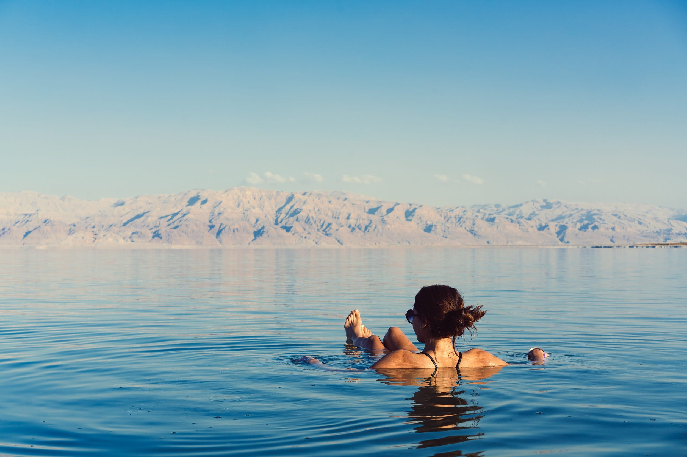
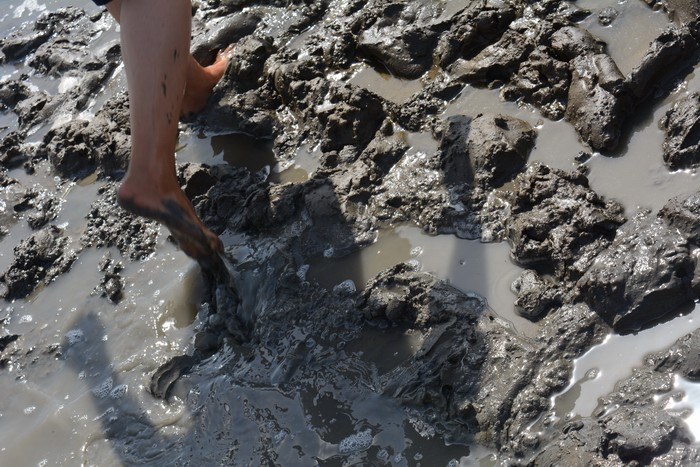

The Dead Sea is a tourist favorite when traveling to Israel. On this page, I'll provide what you'd need to know for a day centered around visiting this location. That includes: a background, insider tips, and its best local restaurant. After reading this page, you will be ready to visit the Dead Sea!
Dead Sea Background

The Dead Sea is less than 1 hour from Jerusalem and is the perfect place to visit no matter the season. As you may know, the salt content of the water is so high that you can fold in the water without trying! It’s not a sea, it’s a salt water lake. The salt content makes it around 10 times saltier than a typical ocean. With that, no lifeform can be found living in the water. It is also the Earth’s lowest point on dry land. You can see the mountains of bordering country, Jordan, while floating in the Dead Sea. This is for all ages, as the Dead Sea is such an important, must-see for all.
Insider Tips

Although the Dead Sea supports no life, its properties do miracles for us humans visiting! Mud pits and baths are found along the shore of the sea. You may have seen beauty products in the U.S. state their product contains mud from the Dead Sea or even the product itself be the mud – there is a reason why. The mud of the Dead Sea is said to have incredible benefits for humans. Some that I have heard include: smoothing skin, rejuvenating skin, removing acne, dandruff, and toxins from your body. The mud contains magical minerals that make it worth looking silly with a face of mud!
Best Restaurant: Panorama

If you are planning a trip to the Dead Sea, you should know where you can eat after your day by the sea. The best place: serving views and a splendid traditional feast is Panorama. The name comes from the 360 degree view the dining terrace gives you! The restaurant offers mezze, salads, grilled kebobs, chicken, fish – you name it. I recommend the St. Peter’s Fish – whole! The freshness cannot be beat.